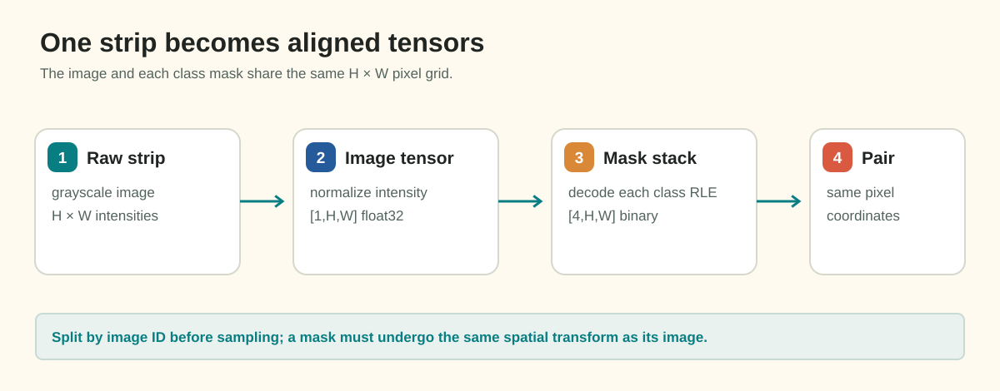
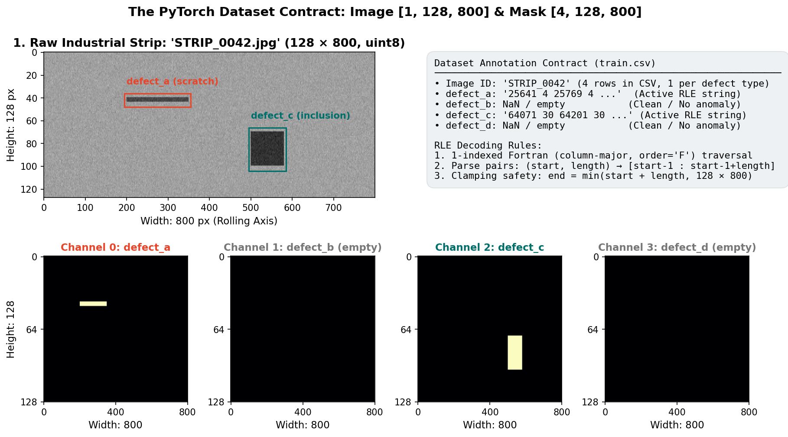

The Dataset Contract: From Annotation Rows to Aligned Strip Tensors
In Milestone 1, you explored the dataset's geometry, the Fortran-order conventions of Run-Length Encoding (RLE), and the mathematical behavior of segmentation metrics on empty masks. In Milestone 2, you move from exploration to execution: building a robust, high-performance deep learning pipeline.
The foundation of every deep learning pipeline is the PyTorch Dataset. If your data loading pipeline silently swaps image dimensions, misaligns defect masks with visual textures, or confuses defect channels, no sophisticated network architecture can rescue your model. This guide establishes the dataset contract required for industrial strip anomaly segmentation.
1. Motivation: The Industrial Strip Imaging Context
In industrial manufacturing facilities (such as steel cold-rolling mills), surface quality is continuously monitored by high-speed line-scan cameras positioned above conveyor lines. These cameras capture optical sensor frames with extreme aspect ratios: 800 pixels wide by 128 pixels high (an aspect ratio of \(6.25:1\)).
Conveyor Motion (Strip Length / Rolling Axis) ──────────────────────────► Width = 800 px
┌───────────────────────────────────────────────────────────────────────────────────────┐
│ [Line-Scan Sensor] │ Height = 128 px
└───────────────────────────────────────────────────────────────────────────────────────┘When building a computer vision model for this domain, standard computer vision assumptions break down:
- Sensors are Anisotropic: Objects do not appear in square \(256 \times 256\) or \(512 \times 512\) scenes. Resizing an \(800 \times 128\) strip to a square alters physical scale ratios by over \(600\%\), crushing thin longitudinal scratches into aliasing artifacts.
- Annotations are Multi-Label & Long-Format: Each visual strip can contain multiple defects or none at all. In
train.csv, annotations are provided as multiple rows per image. - Channels are Monochromatic: Steel strips are optically recorded as single-channel grayscale intensity values, not RGB color photos.
The PyTorch Dataset must bridge this raw disk storage and the tensor format expected by 2D convolutional neural networks: converting disk images and RLE strings into perfectly aligned tensors of shape \([C, H, W]\).
2. Tracing One Sample: The Data Contract
Let us trace a single fictional sample, image_id = "STRIP_0042", from disk to PyTorch tensor.
Step 1: Disk Storage & Schema
On disk, raw images reside as JPEG files at data/public/train/{image_id}.jpg. Their annotations reside in data/public/train.csv, where every image possesses four rows—one for each defect category:
image_id |
defect_type |
mask_rle |
width |
height |
|---|---|---|---|---|
STRIP_0042 |
defect_a |
"25641 4 25769 4" |
800 | 128 |
STRIP_0042 |
defect_b |
NaN |
800 | 128 |
STRIP_0042 |
defect_c |
"64071 30 64201 30" |
800 | 128 |
STRIP_0042 |
defect_d |
NaN |
800 | 128 |
Notice that empty defects appear as NaN or empty strings, while active defects provide a space-delimited RLE string.
Step 2: Grayscale Image Loading
Because line-scan inspection images are monochromatic, load the image using OpenCV in grayscale mode:
image = cv2.imread(image_path, cv2.IMREAD_GRAYSCALE) # Returns ndarray of shape (128, 800), uint8cv2.imread(image_path)) creates three identical redundant color channels, tripling memory bandwidth and VRAM usage without providing additional physical information.
Step 3: Fortran-Order RLE Decoding
The RLE strings follow the standard Kaggle/Severstal specification:
- 1-indexed: Pixel counting begins at index 1 (not 0).
- Column-Major (Fortran order,
order='F'): Pixels are traversed top-to-bottom down column 0, then top-to-bottom down column 1, and so forth. - Pairs: Alternating
start lengthvalues.
Mathematically, for a canvas of height \(H=128\) and width \(W=800\), a 1-indexed linear index \(k \in \{1, \dots, H \times W\}\) maps to 0-indexed row coordinate \(r\) and column coordinate \(c\) via:
Linear Pixel 1 ──► (r=0, c=0)
Linear Pixel 2 ──► (r=1, c=0)
...
Linear Pixel 128 ─► (r=127, c=0)
Linear Pixel 129 ─► (r=0, c=1)Step 4: The Boundary Clamping Safety Rule
When decoding real-world segmentation masks, boundary rounding can produce a run whose endpoint exceeds total pixels:
On a canvas of \(128 \times 800 = 102,400\) pixels, an index \(k_{\text{end}} > 102,400\) causes an out-of-bounds IndexError when reshaped. Your decoder must clamp:
Step 5: Multi-Channel Target Stacking
Because each image can exhibit any combination of the four defect classes, we construct a 4-channel binary target tensor:
Channels must follow a strict, deterministic ordering across your entire codebase:
- Channel 0:
defect_a - Channel 1:
defect_b - Channel 2:
defect_c - Channel 3:
defect_d


Figure 1.1: Tracing imageSTRIP_0042 from CSV rows and JPEG disk file through RLE decoding into aligned PyTorch tensors.
3. Shape and Data Type Trace Table
Every sample processed by your Dataset must strictly conform to these shapes, dtypes, and value ranges:
| Processing Stage | Object | Shape / Dimensions | Data Type | Numeric Range | Memory Footprint |
|---|---|---|---|---|---|
| Raw Disk File | STRIP_0042.jpg |
Compressed JPEG | File Bytes | Compressed | ~15–30 KB |
| OpenCV Decode | raw_image |
(128, 800) |
np.uint8 |
\([0, 255]\) | 102.4 KB |
| RLE Decode | mask_channel |
(128, 800) |
np.uint8 |
\(\{0, 1\}\) | 102.4 KB |
| Mask Stacking | stacked_masks |
(4, 128, 800) |
np.float32 |
\(\{0.0, 1.0\}\) | 409.6 KB |
| Normalized Image | norm_image |
(1, 128, 800) |
torch.float32 |
Standardized (\(\mu \approx 0, \sigma \approx 1\)) | 409.6 KB |
__getitem__ Return |
dict sample |
Image + Mask + ID | Tensors + str | Normalized floats | ~820 KB |
4. Ground Truth Exclusivity: The Multi-Label Audit
Before deciding whether your network should use 4 independent Sigmoid outputs or a 5-class mutually-exclusive Softmax output (background + 4 defects), you must answer an empirical question:
For any pair of active masks \(M_i, M_j \in \{0, 1\}^{H \times W}\) on image \(k\):
- If \(\text{Overlap}_{i, j} = 0\) for all pairs across all images, the defect masks are strictly pixel-disjoint.
- If \(\text{Overlap}_{i, j} > 0\) for some images, the defect masks are spatially overlapping.
Do not assume either outcome based on intuition or past Kaggle competitions. Write an audit script that iterates through every multi-defect image in train.csv and computes pairwise mask intersections. Your empirical finding will dictate whether a 5-channel Softmax head is mathematically permissible.
5. Dataset Architecture & Interface
In PyTorch, a clean Dataset encapsulates storage access and exposes two required methods: __len__ and __getitem__.
The __getitem__ Interface Contract
When dataset[idx] is evaluated, it should return a structured dictionary:
sample = {
"image_id": str, # Fictional ID for tracking and validation
"image": torch.Tensor, # Shape: [1, 128, 800], dtype: torch.float32
"mask": torch.Tensor, # Shape: [4, 128, 800], dtype: torch.float32
}PyTorch Tensor Convention: [Channels, Height, Width]
- Image: [1, 128, 800] ──► 1 grayscale channel, 128 rows, 800 columns
- Mask: [4, 128, 800] ──► 4 defect channels, 128 rows, 800 columnsImage Normalization Strategy
Raw sensor pixels range from 0 to 255. Feeding unnormalized integers into neural networks destabilizes weight initialization and gradient descent. Two standard normalization strategies exist:
-
Min-Max Scaling to \([0, 1]\):
\[x_{\text{norm}} = \frac{x}{255.0}\] -
Per-Dataset Standardization (Z-score):
\[x_{\text{norm}} = \frac{x / 255.0 - \mu}{\sigma}\]where \(\mu\) and \(\sigma\) are the empirical mean and standard deviation of your training partition.
Whichever strategy you select, compute \(\mu\) and \(\sigma\) only on the training partition, never across the full dataset, to prevent subtle data leakage.
6. Common Mistakes and Diagnostics
| Bug / Pitfall | Root Cause | Observable Symptom | Practical Diagnostic |
|---|---|---|---|
| Transposed Dimensions | Passing shape as (800, 128) instead of (128, 800). |
Reshape error or vertically stretched, sheared masks. | Assert sample["image"].shape == (1, 128, 800) in __getitem__. |
| C-Order RLE Decode | Using order='C' instead of order='F' in NumPy reshape. |
Defect mask appears diagonally sheared and misaligned with the visual flaw. | Overlay decoded mask onto the image and verify visual alignment on defect features. |
| Silent Channel Permutation | Iterating over an unsorted dictionary of defect rows. | Channel 0 is sometimes defect_a, sometimes defect_c. Loss fails to converge. |
Enforce a fixed class list: CLASSES = ["defect_a", "defect_b", "defect_c", "defect_d"]. |
| Mask Blurring | Loading masks with bilinear interpolation during preprocessing. | Binary masks contain fractional values (\(0.34, 0.78\)). | Check torch.unique(sample["mask"]) contains only \(\{0.0, 1.0\}\). |
| Off-by-One RLE Shift | Forgetting that Kaggle RLE is 1-indexed (start - 1). |
Mask is shifted by 1 pixel along the column traversal. | Decode a toy RLE string "1 2" and check that pixels at index 0 and 1 are active. |
7. Design Decisions You Must Make
Before proceeding to batching and model training, collect empirical evidence to guide these decisions:
- Target Semantics: Will you format ground truth targets as four independent binary channels
[4, 128, 800](for Sigmoid/BCE), or as a single multi-class integer map[128, 800]with class indices \(\{0, 1, 2, 3, 4\}\) (for Softmax/Cross-Entropy)?- Evidence required: Your empirical pairwise mask overlap audit.
-
Caching Strategy: The training set contains 11,393 images (\(128 \times 800\) uint8). Uncompressed, all images occupy:
\[11,393 \times 128 \times 800 \text{ bytes} \approx 1.17 \text{ GB}\]Can your system RAM comfortably hold ~1.2 GB of raw image arrays in memory to eliminate disk I/O bottlenecks during training epochs?
-
Channel Ordering: Document your channel index mapping in a centralized configuration file to guarantee model heads, metric calculators, and submission encoders agree.
8. Try It: Verify Sample Alignment on Toy Data
Run this self-contained diagnostic snippet in your terminal or scratch script to inspect mask decoding and tensor alignment on a toy \(4 \times 6\) canvas:
import numpy as np
import torch
def decode_toy_rle(rle_str, shape=(4, 6)):
tokens = [int(x) for x in rle_str.split()]
starts = np.array(tokens[0::2]) - 1 # Convert 1-indexed to 0-indexed
lengths = np.array(tokens[1::2])
flat = np.zeros(shape[0] * shape[1], dtype=np.uint8)
for s, l in zip(starts, lengths):
flat[s : s + l] = 1
return flat.reshape(shape, order="F")
# Toy defect in column 2 (rows 1 and 2): linear indices 10 and 11
toy_rle = "10 2"
mask_2d = decode_toy_rle(toy_rle, shape=(4, 6))
print("Decoded 4x6 Mask (order='F'):")
print(mask_2d)
assert mask_2d[1, 2] == 1 and mask_2d[2, 2] == 1, "Pixel alignment failed!"
assert mask_2d.sum() == 2, "Decoded pixel count mismatch!"
print("✓ Toy alignment verified successfully!")For the complete standalone PyTorch Dataset implementation on synthetic data, inspect:
👉 docs/milestone_2_student_guide/examples/toy_dataset_loader.py
9. Authoritative Documentation & References
- PyTorch
torch.utils.data.Dataset: PyTorch Dataset Tutorial - OpenCV Grayscale Decoding:
cv2.imreadFlag Documentation - NumPy Fortran vs. C Memory Ordering: NumPy Array Memory Layout